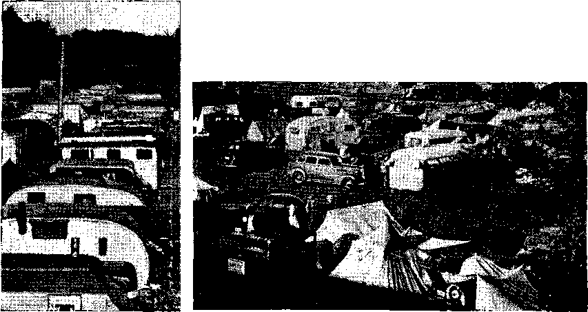
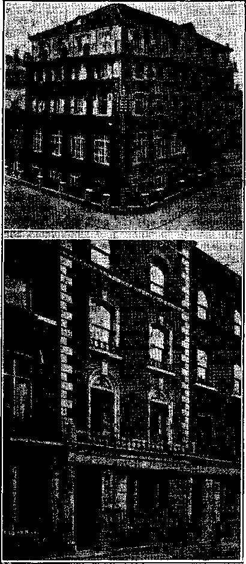

1938
Consolation
Magazine
Contents
The Tragedy of Germany (Part 1)
Convention of Jehovah's witnesses
The Hennes Misfit en Route to the Exit 22
By Trail and Stream and Garden Path
The Goosegirl—Cover Illustration for This Number
Published every other Wednesday by
,THE GOLDEN AGE PUBLISHING COMPANY, INC.
117 Adame St. Brooklyn, N. Y.( U. S. A.
President Clayton J- Woodworth
Vice-President Nathan H. Knorr
Secretary and Treasurer Charles Ii2. Wagner
Five Cents a Copy
$1 a year In the United Staten
81,25 to Canada and all other countries
NOTICE TO SUBSCRIBERS
Remittances: For your own safety, remit by postal or express money order. When coin or currency is lost in the ordinary mails, there is no redress- Remittances from countries other than those named below may be made to the Brooklyn office, but only by International postal money order.
Receipt of a new or renewal subscription will be acknowledged only when requested. Notice of Expiration is sent with the journal one month before eubacription expires. Please renew promptly to avoid loas of copies. Send change of address direct to ua rather than to the post office. Your request should reach ub at least two weeks before the date of issue with which it is to take effect. Send your old as well as the new address. Copies will not be forwarded by the post office to your new address unless extra postage is provided by you.
Published also in Bohemian, Danish, Dutch, Finnish, French, German, Greek, Japanese, Norwegian, Polish, Portuguese, Spanish, Swedish, Hungarian, Ukrainian.
OFFICES FOR OTHER COUNTRIES
England 34 Craven Terrace, London, W. 2
Canada 40 Irwin Avenue, Toronto 5, Ontario Australia 7 Beresford Road, Strathfield, N S W. cauth Africa 623 Boston Houm, Cape Town
Entered as second-class matter at Brooklyn. N. Yo under the Act of March 8. 1879.
May Have to Go to Work
A MOURNFUL note from Fr. Joseph Klein, O.F.M., The Franciscan Missionary Union, 1615 Vine Street, Cincinnati, Ohio. He says that business isn’t what it used to be. Thus:
Only two months ago I sent out our Christmas stockings, which I hoped would bring us enough to carry on for a year. But as only one stocking out of every twelve was filled and returned, I just cannot do anything but appeal again in order to provide for the long months of summer and fall.
It’s just too bad, but it looks as if all there were left were the spade, and pickax, and mattock, and grub hoe, and pitch fork, and such.
Want to Do the Right Thing by Mary
♦ Nothing is said in the Bible that Mary or anybody else was taken to heaven, spirit and body, and so 8 Italian cardinals, 12 other cardinals, 5 patriarchs, 258 Italian archbishops and bishops, 42 other high ecclesiastics and 70,000 children petitioned the pope to declare that Mary was received up into heaven, and that she is much offended by the enemies of the "church” and is now a vehicle of universal mediation in all the graces. Of course, the pope has nothing to do with what goes on in heaven, not the least thing; but he pretends to have, and hence the petition.
Arrested Four of the Crooks
♦ Some months ago, being hard up, some of the crooks at the Vatican stole the pope’s ring, the famous so-called "fisherman's ring”, with which the pope is wont to seal all papal bulls. A number of other gold objects were taken at the same time, and it is believed the thieves melted down the gold. Only four of the erooks were arrested. It was said in the newspapers that two of them were from Milan and two were from Rome, But how these gents could find their wny into the apartment of the Papal master of the chamber, next to the pope’s own suite, puts this in this “Appetizers” column.
Present-Day Saviors
♦ Mussolini is saving the Mediterranean, Hitler is saving Europe, Japan is saving Asia, the pope is saving "Christendom", and the Devil is saving the world of which he is the prince and god. ■
“And in His name shall the nations hope.”—Matthew 12:21, A.R.V.
Volume XIX Brooklyn, N.Y., Wednesday, May 4, 1938 Number 488
The Tragedy of Germany (in two parts -Part i)
“TOMORROW the world will be ours!” Thus runs the tramping song of the Nazis. What kind of place would the Nazis make of the world if it were indeed theirs?
That is a legitimate question, and one which it is not difficult to answer in the light of the kind of place they have made of Germany, and the kind of place they appear to have for some time had in mind making of Austria. The Nazis do not so much want either their former colonies or the world for their increasing population as they want room for the exercise of their boundless ambition. Not more than 20,000 Germans were in German colonies before the World War. Germany is more interested in Germans in other countries; for it appears to be the notion of the Nazis that wherever Germans set foot, there they must dominate. Their insufferable arrogance seems to equal, if it does not exceed, the arrogance of the Roman Catholic Hierarchy, who also insist that the world must be theirs.
It would be puerile to seek to charge to one man the effects that are in evidence in the cauldron of Nazism. The turbulent effervescence of the various ingredients are too great to be stirred by the potentialities of one individual. Yet, that there is in the situation as a whole a “master mind” guiding the developments that shock and dismay the world is evident. That the German people have largely fallen in with the ideas of their “Fuehrer”, though with some misgivings, need not be questioned.
There are doubtless many who submit because of necessity and who are only biding the time when the system of oppression will disintegrate and fall apart as a result of its own inherent weaknesses, or be otherwise terminated by unforseen events.
It is Hitler’s contention that he not merely seeks to carry into execution his own ideas
. MAY 4, 1938 and concepts, but that he interprets in his official actions the collective will of the German people. As a spellbinder he doubtless has few equals, and his appeal to the pride and conceit that form no small ingredient of the German make-up has resulted in giving him the backing of the more assertive. The results of Hitler’s influence on Germany may be judged on their own merits, and the world is at liberty to draw its own conclusions with respect to them. This is particularly true in view of the assertion made by Hitler to the effect that “the German race has a right to rule the world”! This claim is hardly subject to misinterpretation, especially when it is reiterated, with emphasis, by his minister of propaganda, Joseph Goebbels, who, braying still more loudly, said:
We demand that we rule the world. The only instrument with which one can conduct foreign policy is alone and exclusively the sword.
Hitler, his aides and his party can hardly complain when such assertions call forth a response from other nations and their peoples, who, strange as it may seem to these would-be world rulers, are not quite so highly, impressed with the right, or the ability, of the German people, or the Nazis, to rule the world.
In Germany itself any criticism of such utterances is highly dangerous; in fact, all but suicidal. On the other hand, those who desire to curry the favor of those in power will not be slow to offer obsequious tribute. This, indeed, is true not only of the rank and file, but of those who occupy positions of ecclesiastical influence. Hence many German pastors on the occasion of Hitler’s birthday read from the pulpit passages from Hitler’s book iff e in Kampf, instead of from the Bible, but Alfred Rosenberg, from the Department for the Ideological Training of the German Nation, went still farther. He said, in one of his confidential letters, of instruction,
3
Let no one blame those who believe they have found their God there, where today there stands among us one who has been specially blessed by the Creator. No one has the right to find fault with those of our people who have found their son of God and have thus regained their eternal Father.
One might ask in passing, “If Hitler interprets the will of the German people, why then a Department for the Ideological Training of the German Nation?”
The effort to deify a leader, as is done in Germany, is not a new thing, certainly. In all ages the Adversary has brought forth his “saviors” for the worship of men and the supposed deliverance of men from their oppressors, substituting a more subtle form of oppression for the more obvious by means of religion.
Nazi leaders in their political addresses call Hitler the one and only perfect German. In some churches Hitler’s autobiography, Iffeire Kanipf, is read from the pulpit instead of the Holy Scriptures. In some rural communities death notices, instead of stating that the deceased died “in the faith of his Lord Jesus Christ”, state that he “died in the faith in Adolf Hitler”. Poor consolation! At Oberhausen, speaking before a teachers ’ federation, one Bollman-Moers, a district governor, said:
The oppressed Germans in foreign countries look upon Adolf Hitler as someone sacred, holy.
The undue exaltation of any human creature leads to the proportionate under-estimation and disesteem of the Creator and the t principles of righteousness. Consequently, old ’ landmarks are removed and established standards are broken down. New and fanciful ideas are cultivated and superstition grows.
The trend of dictatorship, the form of government favored, । fostered and defended by the Roman Catholic Hierarchy, is toward everincreasing glory for some imperfect, maladjusted mortal, and a correspondingly increasing degradation of the people who are its victims. This trend is well illustrated in Germany, where creature and symbol worship turn the people ever farther and farther from the worship of the Creator.
Reason and principle find no room in a nation dominated by a man whose counselors are devoid of both, and who show not a speck of respect for God.
Children arc-but instruments to be fitted for the waging of prospective" wars of con- * quest and aggression, which, though /denied, are the inevitable outcome of the course pursued by a nation that considers itself superior' to all others and destined to dominate. Hence the blasphemous statements referred to foregoing.
The inordinate exaltation of the “leader” is but a reflection of the people’s will to power, but results in a compensating degradation of the individual. This is unconsciously betrayed in the utterances of those who seek to glorify the nation, and particularly its dictator. The following is from a blasphemous statement made over all German radio stations:
We believe in our Fuehrer as God’s revelation to our people. God said to the German people; If you seek out your leader, then X will change your fate and prevent disintegration. Then a new day will dawn. We believe that the mission of Der Fuehrer is the fate of our people. National Socialism will break open the gates of eternity. You, our Fuehrer, walk among your people as their redeemer. You teach the youth of the country to die for the Reich.
Hitler isn’t a full-grown god yet, but is on his way. The Brunswick Court of Appeals said of this infant prodigy among the gods:
The Fuehrer is an envoy whom God has charged with a great mission for his people and for the world. It is therefore the duty of the church not to oppose but to obey the will of God, of which the Fuehrer is।the expression.
At the fifth anniversary of Hitler’s accession to power the schoolrooms were turned into chapels in , which the children were required to worship before a bust or picture of Der Fuehrer. Among the chants which the children used on that occasion was the following :
Always it must be our duty to thank those who died fur us. He who is unfaithful or abandons the flag or den Fuehrer shall lose honor forever. Curse the unfaithful! Fuehrer, we follow thee; Fuehrer, we swear eternal faith with thee. We carry your picture in our heart. You went before us in sorrowful years. You went before us in danger and storm. We dragged our chains in despair and servitude. We followed you blindly, pressing stonnily onward. Now, from the Alps to the ocean roars our song. We laugh at worries. We laugh at need. Heil Hitler! our leader to freedom and bread.
Another blasphemous utterance is the prayer issued by the so-called “Christian Publishing Society” of Weimar, as follows: . ......
To Germans hast thou ever trusted thine own flag, 0 God. Therefore are we hated of thine enemies. The prouder floats thy banner o’er our victories, so much the wilder rage the rebel band and the name of Germany strikes them like a thunderbolt, leaves them quivering in fear. Moscow, Jews and Rome all pass away, but the holy Reich shall stand. We are here with hard fist and strong. God commands; We shall obey.
, The flag chant of German girls, as they are gathered around the flag poles and the swastika is hoisted, is as follows:
Against our foes both day and night, protect us all, our banner bright. If we win or if we die, our banner shall unblemished fly, '
On the Czechoslovakian frontier Germany now has installed new guns that are effective at a distance of fifty miles. After the shell leaves the gun it backfires at regular intervals so that its velocity is maintained. It is, in effect, a shell rocket combination. Before many months have passed Czechoslovakia may have followed Austria.
One of the significant trends of the times is the definite spread of ancestor worship in Germany. In and around Mecklenburg unused chapels are being turned into halls for ancestor wortship, and that by government decree, and children are being formally received into what is termed '‘the community of all Germans”. Marriages and baptisms are similarly ceremonialized.
At the Ahnenhalle in Guestrow, formerly an ancient Roman Catholic chapel dedicated to St. Gertrude, there is one of the several new churches for ancestor worship, springing up here and there over that land that is slipping back into rankest paganism. A swastika finds its place in the stained-glass windows; there is a bust of Hitler; instead of the Mariol-atry of mother and child there is a German mother surrounded by four children. Names of the ancestors of local families are inscribed on the wall. Creeds are being formulated. The only prayer is declared to be “I will”. The songs are songs to Germany, declaring her-‘everlastingness’ and their own willingness to die for her.
One of the hymns to “blood and soil” being taught at the special Nazi academies in which future leaders are being trained to carry on the work of Hitler and his fellow murderers is the following:
Why search for God in a foreign country, beneath cypresses and paltfls, when He manifests MAY 4, 1938
Himself so marvelously in our own surroundings t It is _ in the gallery of our marshals that God is revealed to us.
Dorothy Thompson, prominent American newspaperwoman, explains the methods by which Dr. Schacht, admittedly one of the most capable political economists in the world, was elbowed out of his position. He was continually harassed in his work by the Nazi leaders. Little by little, compromise by compromise, he was compelled to do things he did not believe would work out for the good of his country. "When conditions became well-nigh intolerable he asked Hitler to give him somebody that would stand between him and the Nazis. Hitler gave him Goering, and Goering used the position for his own aggrandizement and elbowed him out. What'happens in Nazidom is that— •
Every concession encourages new aggrandizements on the part of the insatiable Nazi party leaders who made the revolution, and who eagerly snap up every scrap of power, regarding every concession as a sign of inherent weakness,
Deutschland Berichie for December, 1937, sets forth Nazi methods of obtaining revenue as follows:
The getting in of contributions, fees, gifts and donations, etc., in the prevailing conditions is for the most part nothing but taxation in disguise. The sums raised are devoted in part to State purposes and in part to official Party purposes, for the most part, however, to a system of social welfare which is conducted in a highly peculiar fashion for the benefit of the Nazis and their reliable followers. Sums which would otherwise have to be raised by taxation are in this manner made available, and the Reich budget is relieved of expenditure on social welfare so that revenue can go toward armaments.
Uneasy lies the head that, wears a crown, even if only a figurative one. '
.Referring to Hitler’s murder of the man, Ernst Roehm, who brought about his rise to power, Liberty magazine had an interesting article showing that an organization styling itself “Roehm’s Revengers” so dogs Hitler’s footsteps that for two years he has not dared to ride in a railway train, and in one way or another they contrive to get the letters “R.R.” before him night and day. Not only do these letters often pop up stamped on his mail, but they were even found in dazzling red on the walls of his bedroom, despite the fact that he is surrounded with 250 picked men whose duty it is to kill immediately anybody who interferes in the least with his-health or happiness.
While there has been prosecution of members of the Roman Catholic organization, to which considerable publicity has been given, the Hierarchy has nevertheless made substantial progress.* The Protestant system, on the other hand, has suffered many reverses, but the persecution of Jehovah's witnesses is far greater. The thought, therefore, that the Hierarchy is essentially in harmony with Hitler and the Nazis is justified.
The Freier Aargauer, Aarau, Switzerland, published lengthy extracts from a letter of Boris Toedtli, a Swiss Nazi, to his superior officer Fleisehhauer, Erfurt, Germany, in which, among other things, Toedtli asked for a raise of p;jy and indicated the working connection between the Nazis and the Papal machine in the portions translated below:
Up to now I have obtained good connections with Catholics for the cause against Bible Students [Jehovah’s witnesses]. I was also received by the Papal nuncio, and spoke with him of the entire matter. He gave me two letters of recommendation, one to Zurich and one to St. Gallen. With the approval of Kncf [Nazi attorney in Switzerland] I shall make the trip this week. It would be advisable to publish at onee a paper for the information of the press wherein we can make public various things about the Bible Students. The paper ought to appear every second week, and show Berne as place of publication. It would bo better not to mention Germany, as this might work against the impression of impartiality.
Those who have cheerfully swallowed the stories of Nazi persecutions of the Roman Hierarchy will be interested in a wireless dispatch from Berlin to the New York Times, dated January 8, 1938, that since the Hitler regime came into power—
The number of Catholic churches and the number of Catholic priests have increased instead of decreasing.
The New York Stoats Zeitung und Herold published the facts that in 1919 there were
"An instance of this is scan in what happened immediately after the Nazi seizure of Austria. The United Press dispatch from Vienna March 15, 1038, says:
“This morning, after his breakfast he had received Theodore Cardinal Innitzer, Boman Catholic archbishop of Vienna.
“It was reported that on the occasion of this momentous visit from the religious spobesman. of 80 per cent of Austrians, Hitler gave the cardinal assurances as to the future of the church in Germanized Austria.” but 210 Catholic newspapers in Germany, but in 1937 there were more than 400, and every second one of the 21,000,000 Catholics is a subscriber for one of them. This shows how little truth there is in the oft-repeated stories of “persecution” of Catholies in Hitler-land.
As further evidence of co-operation between the Hierarchy and Hitler, note that German Freemasonry has been destroyed, buildings and property confiscated, and the members are forbidden to communicate one with another, under penalty of arrest and imprisonment. Several prominent Masons committed suicide. It is understood that the Roman Catholic Hierarchy had nothing to do with this 1
At Hagen, Hans Kerri, Church Minister, asserted that of the 8,000 actions so far undertaken against priests, nuns and Catholic Church employees, involving immorality, breaches of currency regulations, and the like, 242 were sentenced to imprisonment for corruption of morals (45 of the number being priests), and 959 more (97 of the number being priests) await trial.
Adverting to the fact that, of the Roman Catholic theologians sentenced to prison terms for offenses of a moral nature against minors, feeble-minded and insane, many were regular priests, the Roman Church issued a pamphlet, distributed at its church doors, in which it acknowledged the following self-evident truth:
Despite the precautions of the ecclesiastical authorities, unqualified persons some times become priests or members of religious orders, sometimes merely because the church offers a secure existence, a thought that doubtless exerted a powerful influence during the economic distress, unemployment and professional difficulties of the post-war years.
It is certain that the discontinuation of subsidies to the church organizations would be far more disastrous to the Protestant group than to the Catholic.
The official figures are that the German government has been paying the churches, Catholic and Protestant, 105,000,000 marks annually from State funds, while it has collected another 200,000,000 marks for them in special church taxes. The Nazi government is now hinting its intention to withdraw all financial support from both rackets, and allow people who wish to pay for their upkeep to do so direct.
Doubtless these subsidies will not be withdrawn until it is concluded that the Roman
Catholic Church will, all things considered, emerge stronger than ever.
The Nazi absorption of Austria now also gives the Roman Catholic Hierarchy increased power in the German empire as a whole. The leading figures in the Nazi party in both Ger* many and Austria are Roman Catholics.
For letting the cat out of the bag that Dr. Joseph Goebbels, German Propaganda Minister, was reared at the expense of the Roman Catholic Hierarchy in a Jesuit institution, Adolf Wein el, a Protestant pastor, was given three months’ imprisonment. The destruction of all Protestant institutions goes merrily on. The Jesuits are onto their job, 100 percent. The Protestant clergy are getting what they deserve for hating and betraying the truth. They deserve no sympathy from Jehovah God or His faithful witnesses. They chose the bed in which to lie; now let them try pulling up the covers.
Der Angriff, Labor Front newspaper of Berlin, puts into words a fact that should be obvious to all, and will be more obvious as time goes on. It says:
We are in position to give thousandfold proof that Roman prelates fight not for religion, not for Christianity, but for political ends, and that they are ready to sacrifice the peace of the nation to attain those ends.
The Nazis are determined to rule the world, and the Hierarchy will offer no particular objection, as long as the Nazis are willing to fall down and worship said Hierarchy, at least to the extent of giving her support and recognition.
On the occasion of the 12th anniversary of the coronation of Pope Pius XI the German government was represented at the pontifical mass at St. Hedwig’s Cathedral in Berlin. Everything is all right, and the bluff that Hitler and the pope are at serious odds is working out fine in bulldozing the whole German populace. ■
Dictatorships do not foster either tolerance or liberality. Germany demonstrates this fact in its persecution of those who conscien-tiopsly hold views considered undesirable by Hitler or the Nazis. The German persecution of Jews is so thorough that notices are sent tout all over the world warning German firms against employing Jewish repreMAY 4,1938
seritatives or Jews in any capacity, even as lawyers. J
Aryan birth certificates are in such demand in Germany that a nice business has sprung up. A German from Frankfurt was arrested in Prague, Czechoslovakia, for copying priests’ naipes from church archives with that end in view.
History never recorded a more systematic, efficient, devilish obliteration of Jews than at present in Germany. First were thrown out the professional classes, some 20,000; next, the tradesmen; now, the Jewish employees, some 50,000, compelled to make way for Aryans. It is calculated that 40 percent of the Jewish population of Berlin is on relief and that in another two years the only Jews left will be the aged. Probably, by then, the ’brave’ Nazi troopers, so ‘courageous’ in battling with women and children, but not with men, may get ‘courage’ enough to line them all up and shoot them. "
Hitler’s incredible smallness of soul may be seen in the fact that he ordered obliterated from the World War memorials the names of 14,000 Jews who perished fighting in German armies during 1914-1918.
Jewish merchants extend credit to Gentiles at their own risk. A Westphalia district “court” ruled that a German Aryan does not have to pay debts incurred by his wife in a Jewish shop.
Hatred of the Jews is inculcated in the schools, the minds of children being poisoned against inoffensive members of this race and so warped that they are likely to prove unequal to the task of facing any question honestly and fairly.
The corruption of the minds of children evidences the absolute and indescribably low cowardice of the Nazi crowd. At Nuremberg, Streicher, the Jew-baiter friend of Hitler, asked a thousand children, “Do you know who the Devil is?” Back came the expected and well-instructed answer, “The Jew, the Jew.” Then Streicher continued, “Yes, the Jew was the Devil. After the war he took everything.” He then circulated among them a “Christmas” booklet, the first poem in which, illustrated by a red, cloven - hoofed beast with a Jew’s head, is entitled, “The Devil is the father of the Jew.”
The length to which this hatred of the Jews goes is shown in a case at Dahlem, a suburb of Berlin, where a public-school teacher told his class that “Jesus Christ was a scalawag of a Jow fellow (Judenlucmmcl) who tried even in Gethsemane to renege1’.
The intolerance of the Dark Ages is revived in the manner in which the Nazis hound the Jewish people. Says Deutschland Berichte:
In addition to the direct attack on Jewish enterprises, a definite role is played by the pillorying, persecution and punishment of those Aryans who do any business with Jews, even if it is business merely in a private way. The Stuermer, for example, regularly published the names of lawyers who act for Jewish clients, of Aryan clients who allow themselves to be represented by Jewish lawyers, of Aryan patients of Jewish doctors, of Aryan farmers who do business ■with Jewish cattle-dealers, of Aryan customers who make purchases in Jewish shops, and even the names of Aryans who greet Jewish acquaintances in the street. In every ease the full name and address of the pilloried person is given. The Baden Administrative Court in October, 1937, removed a burgomaster from his office because in April, 1936, the man had sold a cow to a Jewish cattle-dealer.
A fitting capstone tor so noble an edifice
Taken as a whole, the Condition of the people, and particularly the workingman, ha.s progressed backward. A feature of Nazi rule not widely known is that within the past few months 700,000 small shopkeepers have gone to the wall, and the heads of these little enterprises, who hoped for so much from the Nazi regime, and were promised relief from the oppressions of Big Business, are now seeking jobs in factories, while the Big Business crowd that put Hitler in power is grabbing everything in the country.
Labor Union reports are that the number of railway passenger ears is 5 percent lower than in the depression year of 1932, and the number of freight cars 10 percent lower. Locomotives are in much worse condition. In the manufacture of shells aluminum guide rings are Used instead of copper, but the use of the cheaper metal damages the grooved spirals of the gun barrels, so that they lose their precision after the fourth shot. These and 'many other reports show that the Hitler program of armament “prosperity” is rapidly impoverishing the country. Something must explode soon. Food rationing began January 1, and since then nobody can obtain lard, margarine, fat bacon or cheap cooking fat unless previously registered. Everywhere wages are being forced down. Soldiers now get 15c a day. Everybody buys on credit, and nobody has the money to pay. Rents are seized by the government and turned into armaments.
Raymond Clapper, newspaper correspondent, tellswf visiting a factory w-here the workers, to mitigate their lot, obtained permission to create a flowrnr garden in unused-factory grounds. All but one of the workers in the factory donated one hour of his time to the flower garden. That one declined, claiming other use for his spare time, whereupon a Nazi official took away his “laboy passport”, thus automatically depriving him of his job or of any way to get another job.
Scarcity of materials, and the necessity for using substitutes, makes Germans- complain that there is fish in their sausages, that the bread is worse than in 1914, that boots are made of paper, and clothes of textile substitutes. In many cities there have been food riots. Hitler’s generals have warned him that hunger can frustrate victory, and that the fighting spirit of the German army waned after the effects of hunger became noticeable in 1915.
consolation
There is a scarcity of leather that has led to the production of “fish leather”, which is used in the making of shoes, gloves and other articles ordinarily made of leather.
National economy has also resulted in the manufacture of “chocolate” bars made out of coal tar! The bars look more like soap than like chocolate, but anyone who musters up sufficient courage to bite into them is rewarded by a taste more or less resembling the real thing. ■’
Hamburg chemists, working on the industrial production of albumen from fish for baking purposes, announce that they expect to provide a product that will take the places of more than 400,000 eggs annually.
The use of artificial wool has so greatly increased that in four years the purchase of fine Australian wool declined from 100,000,000 pounds to 37,000,000 pounds, and it is now so satisfactory, and so inexpensive, being less than half the price of real wool, that it is even being used in the regular army uniforms.
Germany slow to learn
Germans must now have at least 10 percent rayon in the composition of their underwear. The object is to keep the rayon plants operating, so that in ease of war they may be made instantly available for chemical purposes.
Silken toothpaste tubes have made their appearance, along with crowns for teeth made of artificial resin instead of porcelain.
As a fitting capstone of the German national structure a piece of legislation has now been passed which makes it incumbent upon German shirt-makers to see to it that shirt tails are abbreviated. Men’s shirts may not be longer than 90 centimeters, (35| inches) in front and 95 centimeters (374 inches) behind. Previously they could be 95 centimeters in front and 100 centimeters (394 inches) behind.
German hairdressers have been asked to collect human hair regardless of how short its length. It has been found that even the shortest hair is useful in the making of felt. The bulk of the human hair will go into carpets. It is estimated that the supply may run to 1,000,000 pounds annually. .
The Nazi neglect of workers may be seen from the fact that in the year 1933 there were only 7,133 cases of silicosis, lead poisoning and weavers’ lungs, but in 1936 there were 13,944 cases.
Accomplishments Accomplishments of Germany, even during Nazi domination, must be acknowledged but need not be credited to the Nazis. Undoubtedly more accomplishments of the kind would have occurred without them.
Germany’s big bridge across the Elbe will have a span of 2,240 feet, and is improperly described by Hitler as the world’s largest. Two of the spans of the San Francisco - Oakland bridge are each 70 feet longer. The George Washington bridge is 1,260 feet longer between its towers, and the Golden Gate span is 4,200 feet—almost twice as long.
The new German automobile highways are double-tracked and devoid of crossings, making them nearly fool-proof. Motorists may not drive upon them continuously for more than eight hours without several hours’ compulsory rest.
The Keichs Autobahn, or national automobile highway, is a double concrete highway, passing over or under all crossroads, taking the shortest way between cities, crossing valleys on high bridges, and built to last. It is of concrete two feet thick, and intended to resist bomb attacks.
The periphon, a German device for recording depths and obstructions by sound, enables
one steamer to pass another with as much accuracy in a fog as if each could see the other perfectly.
The Press Summary, Deutschland Berichte, by the Social Democratic Party of Germany, states that a favorite trick of the control of persons is to purchase a fowl from the farmer and kill it on the spot. If they find grains of corn in1 the crop, then the farmer is convicted of having used bread-grain for feeding purposes, which is forbidden. . . . Like every other form of necessity, the necessity born of oppression is inventive in this as in all other fields. In spite of threats of punishment, there are secret stores, and milking and butter-making go on surreptitiously in the night. It is remarkable how often now an ox or a cow breaks its leg. In such a case the animals may be slaughtered at once at the farm, a thing otherwise strictly forbidden. If everything that is done in defiance of the regulations were punished, then the prisons and the concentration camps would have been filled to overflowing long ago.
The uniformed farm inspectors of Germany have every farm under closest surveillance. The inspector may come any day, milk the cows, tabulate the weight of milk, and check up to make certain that the farmer retains not a pint for his own use. Skim milk for his pigs the farmer may buy back from the milk control station, but at a price fixed by the inspector. When he has a holiday he must tune in and listen to Hitler or go to a concentration camp. At any time the inspector may put in a new man as operator of his farm. When the operator comes he takes over the farmer’s books, including his bank book, sleeps in his bed, eats his food, and orders the farmer and his wife about like serfs. And if the farmer inherited his farm, and is without debt, he is not permitted to borrow money on his place to buy another farm.
One industry that prospers under a 'dictatorship is that of the munition makers. For the first time in twenty years the Krupp gun works paid a dividend. They now have 100,000 men on their pay roll, with an annual wage and salary bill of more than $60,000,000.
For fifty years the firm of Krupp supplied armaments and munitions to both sides of every war; hence it wap peculiarly appropriate that Fritz Krupp committed suicide. In the world today there are probably a hundred hypocrites to every honest person; both the hypocrites and the honest will be interested to know that the Krupps most recently , armed the Chinese and also supplied the Japanese with the guns that demolished Shanghai. In the first two years of the World War Krupp supplied France (through Switzerland) with 150,000 to 200,000 tons of steel every month. But, of course, most of his tonnage went to Germany.
Both the army chaplains and the officers’ corps of the German army expressed regret at the official admittance of the iieo-pagan German faith to the army barracks, for the reason that the so-called “Christian religion” makes the best and most courageous murderers. Since the neo-paganism came in there are many more suicides and desertions than before.
Protestant chaplains in a lengthy petition to Hitler drew his attention to the fact that in the World War 36 percent of the students of Protestant theology fell in battle, which was the largest percentage for any group or profession, and then told that gent something that ought to make a dent even in his head of solid ivory, and that is that in a new world war, such as Hitler plans,
The comradeship experienced in the World War will also be lacking. It is impossible for Christians to feel fellowship with those who have been systematically trained to speak of Christ as a swine and a Jewish tramp, and to flaunt their power. The official war propaganda also will suffer, because a not unimportant section of the population will believe not a single word after what they have experienced in the church straggle.
In reckoning up the great victories of the “mighty” Hitler, space must be allowed for the efficient propaganda work in Palestine which is reckoned as one of the principal reasons for the disorders there in which 700 Jews and Arabs were killed during the past three years. The new kind of warrior.
Judge Michael J. Henderson, in the Kansas City Star, said, not without considerable truth:
■' Germany is dangerous. The people are unhappy. They live in brutal poverty to support a huge army. They seldom smile. The characteristic German gesture now is a shrug and a move to tighten the belt. A pOwder-keg; soldiers everywhere; tension. If they had the dough, they’d be carving throats tomorrow.
(To be continued)
Fish Did Not Like the Chlorine
THE makers of chlorine gas and other poisons have to live, and one of the ways they live in peace times is to poison all the drinking water for humans, at so much per. The
idea is to sell as much chlorjnc as possible. The result is that the water is not fit to drink and nothing can live in it; and the people that drink it are in hard luck for the same reason. Twenty-five prize rainbow trout were shipped from Wolf Lake, Mich., and placed in a 2,000-gallon tank of drinking water such as is used by the people of Cleveland, Ohio. Into this water was put all the chlorine that the makers could persuade some softhead of the municipal administration to buy. In 4-4 hours 12 of the 25 fish died rather than try to live and swim around in the poisoned water. The 13 others were saved by putting them in water that had not been poisoned in the manner in which the Cleveland people love to be poisoned.
♦ There are five species of salmon taken by fishermen in the Puget Sound region: sockeye, spring, coho, pink, and chum. All are born in fresh water but spend their mature life in the sea. When spawning time comes the female salmon, guarded by the male, ascends to the place where she was born, and deposits her eggs to the number of several thousand in a little basin scraped out in the river bed with * snout and fin. When the eggs are fertilized they are covered with gravel. With that the life cycle of the parent fish is ended. Children never see their parents; one generation is dead before the next arrives.
I
Had His Telephone Removed
♦ Dr. H. Spencer Jones, astronomer royal of the Greenwich Observatory, was so pestered with inquiries after his announcement that the moon is moving oft its calculated position that he had his telephone removed.
Earth’s Temperatures Slowly Equalizing ♦ Studies of Soviet scientists indicate that in seventeen years the mean annual temperature in the Arctic regions adjoining the Atlantic ' ocean has risen by two degrees and the tropics have become correspondingly cooler.
MAY 4,1938
♦ It helps a Christian to a still greater appreciation of Jehovah God, the great Creator, to know that 36,000 galaxies of stars have been photographed and counted. Each of these galaxies contains the approximate number of • stars contained in the Milky Way; i.e., the number of stars in each galaxy runs into the billions. It is estimated that when the big new telescope is installed at Mount Palomar at least a half million of these galaxies will be seen, and photographed by their own light.
♦ It is calculated that the annual consumption of oil, at 10,000 gallons to the tank ear, would make a continuous train 28,000 miles in length. This tremendous consumption can continue for only a few years longer. Meantime the earth is growing noticeably lighter, forecasting possible permanent changes in its orbit, in the length of the year, and in climatic conditions.
Biggest Star Galaxy of All
♦ The biggest star galaxy of all, the so-called “metagalaxy”, lies opposite the South Pole. Estimated to be located 100,000,000 light-years away from the earth, it is itself 50,000,000 light-years long and 20,000,000 light-years wide, being 50,000 times the size of the Milky Way, in which our sun and its retinue of planets has its habitat.
Puzzled by Irregular Course of Moon
♦ London dispatches report the astronomer royal of Britain, Dr. H. Spencer Jones, as commenting on the present irregular course of the moon. He states also that the departure from the mathematically prescribed course continues to increase and is now greater than at any time in the past 250 years, and that no reason for the deflection is known.
♦ An oasis in the desert is merely a big depression in the center of which is a comparatively small fertile area. If the depression is large enough, and the rainfall is sufficient, the lowest part of the oasis may be a small lake, or even a large one, like Lake Tchad, of the Sahara.
11
• AS -THE exposure of the “refuge of lies’’ must be accomplished in this day of revelation, the following facts are relevant to the uncovering now in progress.
The Orthodox Church of Greece elings grimly to the word “orthodox”, and an examination of its history gives it prior claim as a religious organization. The circumstances that ushered in the pope of Rome may be said to have taken a concrete form when Mauritius the emperor was slain at’the hands of Phocas, a centurion of his army, Now, what would induce Phocas to slay his master but the desire to take his place. And what could help him better than scheming, ambitious religionists.
Mauritius the emperor favored the claims or pretensions of John, bishop of Constantinople, and turned a deaf ear to the appeals and entreaties of Gregory of Rome. John of Constantinople -was claiming true apostolic succession and the right to the title of universal patriarch. This stirred Gregory’s ire, and he wrote the emperor Mauritius complaining bitterly of the arrogance of John and the pre-sumptuousness of his claims.
It requires little knowledge of the religionists to realize that this was virtually an ultimatum to Mauritius. Shortly after his refusal to interfere with John, Mauritius was murdered by Phocas. Gregory condoned this act and consecrated Phocas as emperor; and thus we see these two religious organizations vying for supremacy. Both were endeavoring to “exterminate heretical impiety” by the rigor and discipline of secular power.
Phocas now sought to reward Gregory, his benefactor, but the sickle of death took Gregory to that place where there is ‘no wisdom, knowledge or thought’. Phocas, however, must justify his consecration; so he rewarded Gregory’s successor, Boniface the Third, with the title of ‘‘Universal Patriarch”, A.B. 606 (see Gibbon's Decline and Fall, Vol. 8).
The schism was now becoming apparent and the orthodox church of Constantinople found a growing rival in the sect of Rome. In. consequence of the refusal of the Roman sect to obey its parent, the bishop of Constantinople excommunicated Leo IX, bishop of Rome, and the schism of the Roman sect was completed, in A.D. 1054. The Eastern church, however,, in spite of its early pretensions, has never recognized a universal head and is still known as the “Greek Orthodox” church.
Let me enlarge a little on the claims of this religious body. All the early councils belong to the Greek church, were held in Greek cities (Nice, Constantinople, Ephesus, and Chalce-don), and they were summoned by Grecian emperors and composed of Greek bishops. All the leading ecclesiastical terms in the Roman sect are Greek; viz., pope, patriarch, synod, ecclesiastic, heresy, catechism, church, diocese, trinity, catholic, canon, etc.
The Roman sect now began its machinations to obtain temporal power; and this is how it came. Pepin the father of Charlemagne was a counselor of Childeric, ’ who was king of France in the eighth century. Childeric was weak; Pepin, ambitious. Pepin claimed a princely lineage, and now began to turn his eye to the advantages that might be gained by having a religious backer. Accordingly he visited the bishop of the sect now styling himself as ‘ ‘ universal patriarch " and propounded this riddle: “Who should reign, one who is king in name, but weak and powerless, or a bold, courageous prince who is powerful and strong but is without a kingdom?”
The pope answered him according to his will (i.e., Pepin’s), and in consequence the feeble old king was overthrown and Pepin seized the crown. Reward was now necessary to the sponsor of Pepin, and certain lands were conceded to the pope by the usurper king. These lands were augmented by Charle- 4 magne, the son of Pepin, and the Roman sect became a world power until the time of Napoleon.—F. L. Brown, London.
♦ When Mussolini made his deal with the Vatican, the consideration was the equivalent of $80,000,000. The interest on that, at 3 percent, is $2,400,000 a year, and that is $500,000 a year more than it costs to run the Vatican government.. The pope, therefore, has money to bum, and is well able to lend a hand in Ethiopia, Spain, or anywhere else where the outlook is fair for a good return on the investment. $80,000,000 is a bagatelle to the Hierarchy. Twenty-five years ago they had ' so much money they did not know what to do with it, so the present Cardinal Paeelli said.
ON OUR arrival in Newfoundland the Daily Telegram published the following skit:
Investigating. It is stated that three foreigners who arrived here a few days ago are distributing literature likely to cause a disturbance of the peace. The matter has been reported to the authorities and it is understood the police are investigating.
Well, we received a visit from the police the same day, and gave them a statement of what we intended to do; also a little advice regarding the Kingdom. We also played a couple of records, with the result that one of the police is now reading the literature. One of the officials ordered our papers held up and examined, which gave me another opportunity to witness to some of the higher-ups. They have nearly all the literature at the police station and say they are still investigating as to whether they will deport us. They have tried to bluff us in every way, but we all know it is hard to bluff one of,Jehovah’s people. Some time ago they seized another witness’ records on “Separating the Nations”, and still have them.
In February, 1936, one of the stations here agreed to^ broadcast the lecture, and was stopped after fifteen minutes. The man doing the broadcasting has since left that station and has a station of his own, and is quite favorable, having all the books.
The population of Newfoundland is half Catholic, and the Hierarchy has the people in complete subjection. The people are far more destitute than anything we ever saw in the States. They have to depend on what they get out of their fish at the end of the season, which is not much.
Girls doing housework get from $3 to $10 per month, rarely over $5. Men get $20 to $30 per month for labor of all kinds. Living is from 20 percent to 30 percent higher than in the States. We are practically living on rice in order to get along, but are getting a great kiek out of our experiences, rejoicing in being a little closer to the front lines.
Many of the people here are illiterate. Such a thing as sanitation is unknown. Few have toilets. Everyone uses a pail, and where the pails are emptied is uncertain. Little of the town of St. John’s (23,000 population) is covered by a sewer. There are no squares or blocks, the streets running every which way, MAY 4, 1938 ' the same street changing from one name to another as it twists and turns this way and that. The streets are very narrow and rough. There are a couple of streets that are paved and have sidewalks.
We are on what is called the Avalon peninsula ; there are about 600 miles of.road on this peninsula, such as the roads are. The rest of the island can bo worked oidy by boat, except along the one railroad line that extends across the island; there are no roads on the mainland of the island.
This is a great place for eodfishing, and if you saw how they handled them you would not want any dried cod; but they are sure fine when eaten fresh, and one can get a fish weighing 2J or 3 pounds for 5c. This is the only thing in the line of food that is cheap. Rice is 7c per pound, coffee 80c, potatoes 12c to 14c per gallon.
We are lucky to leave three or four books and a very few booklets each week, and have to live on this, and replace our clothing as it wears out; but this is no doubt the Lord’s way of preparing us for the final struggle. We know there are serious times ahead and we piust be prepared. No doubt many of the brethren in Germany are lucky even to get bread and Water, and with terrible physical suffering to top it all.—Ernest E, Ellis and party, Pioneers.
♦ Let anyone perform a Fascist salute in Moscow or a Communist salute in Berlin or Rome, or let any citizen of Russia, Germany or Italy fail to perform the proper salute at the proper time, and he is at once regarded as a suspect and criminal. Americans ought to keep as far as they can from that sort of fetish worship,—Sherbrooke (Quebec) Daily Record.
♦ In an address at Sherbrooke, Quebec, R. L. Calder, K.C., of Montreal, and himself a Catholic, in condemning the padlock law, with its opportunities for secret accusation and secret, information, and all its other bedevilments, made the statement:
There is not one vestige of British liberty left in Quebec. There are no free men except by tolerance, and freedom by tolerance is no freedom at all.
THE Totalitarian state, or Fascism (Catholic Aetion),is thus described by Ogden L. Mills:
A planned economy calls for an allpowerful government; for, if government is to regiment people as producers and ration them as consumers, it must have complete control over their lives. And this sort of government calls for something which to all intents and purposes is a permanent administration. Hitler was voted in by a majority of the German people in an apparently honest election. But just let the German people try to vote him out. Thus autocracy in government is the inevitable consequence of collective planning. Ballots may put the planners bi. Only bullets can put them out.
Fascism (Catholic Action) in Practice ♦ The president did not mention Fascism (Catholic Action) by name in his address at Chicago, but described it perfectly when he said:
The present reign of terror and international lawlessness began a few years ago. Without a declaration of war and without warning or justification of any kind, civilians, including women and children, are being ruthlessly murdered with bombs from the air. In times of so-called peace, ships are being attacked and sunk by submarines without cause or notice. Nations are fomenting and taking sides in civil warfare in nations that have never done them any harm. Nations claiming freedom for themselves deny it to others.
A Few Prominent Fascists in the U. S.
♦ A few prominent Fascists in the United States are Basil Harris, of the International Mercantile Marine, Kelley Graham, president of First National Bank of Jersey City, Ogden Hammond, Jersey City banker, Joseph P. Grace, shipping magnate, and Thomas F. Woodlock of the Wall Street Journal. All these are reported to have served on the pope’s Fascist committee to raise funds for Franco’s baby-killers.
Claim to Be Working with C.I.O.
♦ Communists in the United States are but a handful, and therefore not of great importance in American affairs of any kind, but the New York correspondent of the Moscow paper Pravda claims that the American Communist party is actively supporting the C.I.O.; at least so claims Mr. Green of the American Federation of Labor,
♦ Are the American Legion and Veterans of Foreign Wars, chiefly distinguished for their recent bonus-grab, representative of Americanism? Does the faculty of Harvard, which signed away its academic freedom in the best Heidelberg manner, exemplify the “spirit of Americanism”? Is the labor of small children in mills and canneries, as recently endorsed by the New York State Legislature’s refusal to ratify the child labor amendment to the Constitution, Americanism?'Perhaps the direct, or Tampa, method of getting rid of Reds would fall within the definition. Or the tactics of every Washington administration in turning natural resources over to private commercial interests. Can it be that Senator MeNaboe’s ideal American is his distinguished fellow-Democrat, Jim (To-hell-with-eivil-serviee) Farley ?—William Vogt, in New York Times.
The Drive to Control the World
♦ The drive of the Roman Hierarchy, and of Italy, Germany and Japan, to suppress Communism, and fight it wherever it shows its head, is merely an outward expression of an inward determination on the part of the Devil to destroy all liberty in the world. The boast is openly made that the three nations have 2,000,000 tons of warships and 200,000,000 men at their disposal, and it is also truthfully said that their descriptions of Communism are sufficiently loose to include France, Britain and the United States as being under Communist control. Anybody who disagrees with Hatti, Mussolini, Hitler, Franco, or any other of a score of the world’s dictators, is conveniently labeled by the word “Communist”.
Pegler on Hitler and Mussolini
♦ That lovable rascal Westbrook Pegler, commenting on the demands of the Fascist countries that America must revoke freedom of speech for fear of offending those bloodthirsty and conceited murderers, said, thoughtfully:
In both eases there is only one thing to do. The free countries must look them dead in the eye, stamp on their corns and tell them to go to hell. Otherwise they will run us ragged, apologizing, explaining, curtailing our rights until we shall be no better off than they.
♦ If you. are rich, and live in the United States, and want to dodge paying taxes, so that they will all be paid, by those least able to pay them, the way is now clear. The Government finds that rich men fix it up with the Bahamas Standard Life Insurance Co., Ltd., Nassau, Bahamas. It is all very simple. Thus Richard E. Dwight, obtained a $4,000,000 insurance policy on his life. There was no medical examination. The premium payment was $2,793,720, payable in advance. He paid it.-Next day he borrowed $2,832,540 on his policy, for one day. The net result of his financial jugglery was that he had expended $8,361 in cash and had effected a reduction of $53,448 in his income tax. Ho is a lawyer, 58 years of age, and only one of many doing everything humanly possible to avoid paying the taxes which other people are supposed to pay cheerfully. '
Channing Pollock’s Bitter Words
♦ We believe that voters can be bought—are being bought-—with our money, and that there are enough of these voters to do as they will with us. We have no faith in our leaders, nor in Congress, nor in most of our courts. We believe that any organized group can grab as much as it wishes out of the treasury. We would not take our nation’s word or its bond, or its word on its bond, nor will any nation take any other nation’s word. Repudiation of debts and contracts is commonplace. Everybody suspects and hates almost everybody else. Class is arrayed against class, section against section, and labor against capital. Everywhere is confusion, alarm and uncertainty. We grow slack because there seems no virtue in, or reward for, our best efforts. We spend profligately lest it be taken from us,-—Channing Pollock, in The American Mercury.
Federal Employees as Tax Dodgers
♦ Referring to the fact that in Washington, D.C., there are 127,000 fed'eral employees who pay no taxes, Representative Dirksen, of Illinois, who wonders how it comes that members of Congress and of the Cabinet, and others of the “high and mighty”, get off scot free, let in considerable light on a dark and mysterious subject when he said:
You know and I know that many of them have lived here twenty years and more. They use all of the services that are supplied by the municipality. When we suggest that they ought to pay something like a fair share of the cost of operating this municipality they throw up their hands in horror as if we were proposing to confiscate their property and their earnings.
Slum Clearance Becomes a Racket
♦ The Fellowship Forum (now The Fation’s Forum) presents evidence that the government plan for slum clearance turned into a racket, partly because friends of the Administration had lands which they wanted to sell, and partly because the buildings, when erected by government methods, cost so much that the rents, in the end, were more than poor people can pay. The net result is that real slum clearance, providing better homes for the poor, where the little they can1 pay for rent will be sufficient to give comfort to the occupants, is a failure.
Resettlement Throwing Money Away
♦ United States Senator Byrd, referring to the fact that the average home in the United States is of the value of $4,400, calls attention to the scandalous feats of the Resettlement Administration which made 880 homes in the Greenbelt or Tugwell town project in Maryland cost $16,182 per unit. Trying to make a hit, by spending as much public money as possible, the neat little sum of $456,603.50 went for landscaping this project, $120,819.81 for surveys, and $198,850.17 for land preparation. All together, $14,000,000 of public money has been spent on this project, and “the end is not yet”. Equally interesting evidence of Farley statesmanship may be seen at the Hightstown, N. J., project and the Newport News development for Negro families.
The Check-mailing Machine
♦ The government uses a check-mailing machine that takes a package of several hundred checks, opens envelopes of the window type that do not need to be addressed, feeds the checks into them one at a time, moistens the flaps and seals the envelopes, and if a second cheek is accidentally fed into the envelope the additional thickness breaks the contact and stops the machine. The checks are written at the rate of 267 per minute.
SEATTLE’S million-dollar civic auditorium (see above) will house the next convention of Jehovah’s witnesses in the United States, this convention being intended especially for those living in the northwestern states and western Canada. Dates, Juno 2, 3,4 and 5.
Judge Rutherford, who has just completed a radio and lecture tour to Australia, stopping also to address a large audience at Honolulu, Hawaii, will be in attendance at the Seattle convention. As principal speaker he will address the conventioners and the people of Seattle (as well as an extensive radio audience) on the subject “Violence”, on Sunday, June 5, at 3 p.m. It is anticipated that some 16,000 persons will attend. .
Memories of Columbus trailer eamp evoke visions of Seattle.
of by to
attend the great public assembly on Sunday, June 5, and also to gain information about the work Jehovah’s witnesses are doing.
it* i tf f * w ’
Sections
of trailer camp at Columbus, Ohio, convention, 1937
16
consolation
Many witnesses and people of good will are arranging for their vacations to come at the time of the convention, so that they may be there. As was the ease at the recent convention at Columbus, Ohio, where 30,000 attended, many will come in automobiles, trailers and house-cars, and will find accommodations on grounds provided for that purpose, some camping in tents. However, the majority of the conventioners will stay at hotels and-private homes. The convention committee at 800 Broadway, Seattle, is already making arrangements to take care of the prospective visitors, who will shortly be sending in their applications for rooms at homes or hotels, writing for other information.
During the convention all the residents Seattle and vicinity will be called upon the conventioners and personally invited
or
/
by
QUE S T10 N : The scri pt u re at Romans 13:1 reads: “Let every soul be subject unto the higher powers. For there is no power but of God; the powers that be are ordained of God.” Mussolini and Hitler are in absolute power in their states and therefore stand in the position of Caesar. Does not this scripture mean that their power is ordained of God and therefore they are the “higher powers”, and that every person must be subject to them and obey their dictates? ,
Answer: No; that scripture means nothing of the kind. It is not addressed to the nations and people in general, and has no reference whatsoever to the rulers of the “state” or nation. It is addressed, as shown by the context. “to all . . . beloved of God, called [by the Lord God] to'be saints.” (Romans 1:7) The rule laid down at Romans 13:1, therefore, applies only to those who have made a covenant to do God’s will and who have been accepted by Jehovah God and called by Him to be members of God’s organization or church. Therefore they are of the people taken out of the world for His name. (Acts 15:14) These are under Christ Jesus the head of the church. Jehovah God has laid down in His Word the law or rules for the government of His church under Christ. All power and authority He has committed to Jesus Christ. (Matthew 28:18) Therefore the “higher powers” referred to in Romans 13: 1 are Jehovah God, who is supreme, and Jesus Christ, His Executive Officer; and, together, God and Christ constitute the only “Higher Powers” in existence* and all that power with reference to the governing of Jehovah God’s organization is ordained or appointed of God, and all creatures who have agreed to do the will of God must be subject to God’s law declared and executed by Christ Jesus. Instead of Romans 13:1 showing that the officers of the “stale” or nation constitute the “higher powers”, exactly the contrary is shown thereby. If Jehovah God made the “states” or officers thereof the “higher powers”, then why should Tie make different laws to govern the people in the various places or nations of the earth? For instance, in Germany the dictator makes certain laws, which laws are repugnant to the nation of Great Britain, If the construction placed upon Romans 13:1 by religionists were correct, then it would mean that God is wholly inconsistent because of having different laws under different countries and nations. Thus it is seen that the “Higher Powers” mean Jehovah God and Christ; and all persons who agree to become the followers of Christ Jesus must be subject to the ‘'Higher Powers’ God does not compel anyone else to be subject to Him, but lie offers the opportunity to anyone who will to make a covenant to be obedient to Him; and when they enter into that covenant, then they must obey.
CONSOLATION readers have, from time to time, sent in snapshots and photographs for publication. Some of these illustrated stories or articles sent in. Heretofore these could not be reproduced, but now improved equipment makes this possible, pictures being, clear and of good contrast, and not too small.
Readers, the world over, haying pictures of interesting and unusual scenes and events, or such as illustrate Kingdom activities of MAY 4,1938
Jehovah’s witnesses, are requested to send them in for possible use in Consolation. While it will not be possible to use all sent in, or to return those not used, or even to acknowledge them individually, doubtless Consolation readers will be glad to send in pictures in the hope of giving pleasure to thousands instead of being kept merely for personal enjoyment.
When sending in pictures, include description on a separate sheet ,of paper, identifying the picture on the back by a light number written in ink or soft pencil.
BECAUSE his niece went blind John Marsh, mountaineer near Carlisle, Pennsylvania, says he will stay in jail and rot rather than permit his seven-ye ar-old son to be vaccinated. He objects to the superstition regarding the efficacy of cowpox of uncertain origin being pumped into the human blood stream. No doubt he has learned of the in efficacy of vaccination in those most highly vaccinated countries of Japan and the Philippines, and he cannot quite see why his boy with a clean blood stream should be a danger ‘to others. He has been in jail before for the same offense ; once for eight months at a stretch.
♦ Andrew Mellon had it all fixed so that neither the United States nor the State of Pennsylvania would get anything of his estate when he died. Believed to have been worth $500,000,000, he left everything worth mentioning to an educational and charitable trust of which his son, his son-in-law and his lawyer are the trustees. The government claims, and with reason, that this trust is really not a tax-exempt organization, but another Mellon concern.
♦ The United States Circuit Court of Appeals, Philadelphia, Pa., ruled it was illegal for 250 sit-down strikers, occupying the Apex Hosiery Mills for six weeks, to prevent the owners from using their property, or prevent the 2,500 other workers who wished to work from exercising their rights. At the time of seizures of the plant by the C.I.O. union the company had a weekly pay roll of $70,000.
Pennsylvania’s Sensible Commissioner ♦ Dr. Lester K. Ade, Pennsylvania’s superintendent of public instruction, expresses the sensible view that compelling school children to salute the flag is fine for Hitler or Mussolini but not for the American public.
History of U. S. Flag
♦ The first U. S. flag showing the stars and stripes was designed by Francis Hopkinson, of Philadelphia, sewed by Margaret Manny, and hoisted in a naval celebration July 4, 1777. Betsy Boss had nothing to do with it.
♦ New York is a metropolitan city; Philadelphia is one of its suburbs at present under the control of the Roman Catholic Hierarchy. After the three Russian fliers, GromofE, Yu-masheff and Danilin, made their record flight over the North Pole, from Moscow to San Jacinto, California, 6,262 miles, they were cordially welcomed in New York by Mayor La Guardia, but Cardinal Dougherty’s mayor, S. Davis Wilson, of Philadelphia, refused to see them. That was really a delicate compliment to Gromoff and his colleagues, though it was an insult to Philadelphia.
♦ At the opening of the year 1937 J. Harvey Gravell, of Philadelphia, Pa., asked each of his employees to furnish him with a list of his debts. He then paid the whole bill, amounting to about $100,000, so that each could start the new year with a clean slate. Every one in the plant got at least $100, and one man received $7,000 to wipe out his mortgage and other debts.
Governor Earle Against Liberty-Lovers
♦ Governor Earle, of Pennsylvania, is so against liberty, despite the fact that the cracked Liberty Bell is still in his state, that he objected to the showing of the film “ Spain in Flames ’ on the ground that it would help the Spanish Republic and some liberty-lovers might take up sides—as Lafayette and Kosciusko did, for example.
♦ Meadville, Pa., is getting religious, or something like that. A little while back one of its churches had the following sign out in front, as indicating the heights to which Meadville has risen:
Grace Methodist Church, Dr. George R. D. Brown. 10:45 worship: “Worms for Lark’s Feathers.”
♦ The tallest all-wrelded structure in the world is the antenna tower for radio station KDKA, Pittsburgh, Pa., 718 feet high and only 5 feet wide.
U. S. Deportation of Aliens
H Thomas Hogahth, immigration expert, writes interestingly of the sufferings brought upon aliens and their families by U. S. deportation laws and regulations. Oddly, native Russians may not be deported unless Unele Sam pays Russia $1,000 for every year such Russians worked in upbuilding America, but in other instances men who have worked here for as long as forty years are picked up and their homes and businesses ruined by the stupidity or worse of the officials, mostly agents of the Hierarchy, whose only idea of government is force and cruelty. A Scotsman who could not be returned to his native land, because the record of his birth could not be found, was released but turned over to the police and sent to jail for six months because he had no visible means of support. The dumbbells figured that after six months’ free board he would be better off and more able to support himself than if he had been free and independent in the meantime. Oh, Beads! Candles and “Holy” Water! In another instance an American married a Canadian; now he may not enter Canada and she may not enter America, the “land of the free and the home of the brave”. The only times they ever see each other are when they ride back and forth on the ferryboats which cross the Detroit river.
Turning the U. S. A, Over to the C.I.O.
♦ Referring to the rapid turning of the U.S.A, over to the C.I.O., the Norfolk (Va.) Ledger Dispatch says of the political deals that keep its head, John L. Lewis, in power:
Up to this time the government of the United States and the governments of the several states have not merely temporized with the C.I.O. and closed their eyes to its lawlessness: these governments have capitulated. What the outcome will be, only God knows.
500,000 Reasons for “Hands Off” Policy ♦ In discussing in Congress the reasons for the Government’s maintaining a “hands off” policy as far as the C.I.O. is concerned, Representative Treadway, of Massachusetts, suggested that very likely the $500,000 C.I.O. contribution to the last Democratic campaign fund has something to do with it. And there seems no reason to doubt that he is correct.
Ben Adams’ Bookkeeping
♦ Ben E. Adams, native American, South Carolina, has been gathering statistics which, put in bookkeeping form, are something like this: ■’
Otheb Countbies in a/c with Uncle Sam Dr. Cr.
To Foreign-Born Citizens 16,500,000 To Illegally in the U. S. 3,500,000 To Unnaturalized in jobs 6,000,000 To Unnaturalized on relief 1,500,000 Total Unemployed in U. S. 10,500,000
To Balance 17,000,000
27,500,000 27,500,000
Looks as if Unele Sam could take care all O.K. of the foreign-born citizens that are legally in the United States, and naturalized, with a half million to boot; but the departure from America’s shores of 10,500,000 foreigners would do incalculable harm to the country. At least, so many think.
Urge Mr. Hoover to Keep to His Job
♦ The American League Against War and Fascism, claiming to represent over 3,000,000 American citizens, has invited the Department of Justice to note that J. Edgar Hoover of that department advised members of the Kiwanis International to return home and organize “law and order committees”. They suggest that such committees, formed in the past, have usually- turned out to be violators of the civil rights of farmers and organized workers, and they request that the Department of Justice invite Mr. Hoover to attend to the job for which he is paid and not advise the formation of extra-governmental agencies to do the work which the government itself is supposed to do. This idea of people’s minding their own business is something new, and should make a hit.
Looking After the Political Fences
♦ Looking after the political fences, the executive departments of the United States Government increased the use of franked mail from' 302,126,000 pieces in 1930 to 669,352,000 pieces in 1936. And that, gentle reader, is the natural result of placing the chairman of the National Democratic Committee in the job of postmaster general. It also explains the deficit of $72,000,000 in the Post Office department last year.
MAY 4, 1&38
19
♦ Cotton is really a much taller crop than it appears from a car on the highway. Except on very poor land, it grows from eighteen inches to five feet, and sometimes six, in height, according to season and land. The general average on ordinary land is from two to three and a half feet; and the bolls are distributed from top to bottom of the plant. In picking, there is a constant change of position which acts to relieve the tension on the back that would otherwise result. There are some people who can do no form of bending over work without much back discomfort, and occasionally one of these is found in the cotton field, but the average cotton picker suffers but little inconvenience from his back.
There are few hand-work jobs on the farm that, from the standpoint of the work itself, I enjoy doing more than cotton picking, and this work is not regarded as drudgery by the average picker. In fact, some pick who are not in any way obliged to do so on account of financial necessity. And while an occasional picker works on his knees, the majority do not at all, or else to a very limited extent.
There is a knack in picking cotton which not everyone can get. Cotton in the boll is ordinarily in five lobes, with some inclination to stick in the bottom; thus much of the time pulling in two if not taken hold of just right. To be an expert cotton picker one must have nimble fingers and a deft control of them. He must work with both hands at the same time, getting hold of all five lobes in each boll and extracting them by a quick, dexterous movement of the fingers.
The price paid pickers this season varied some according to locality and the urgency of the picking demand. In the back hill section, where the demand" was comparatively light, 65 cents per 100 pounds ivas about the price. In my locality the season started out with 75 cents a hundred, later coming up to 85 cents; a very few paid a dollar.
In good cotton extra-good pickers pick from 200 to 250 pounds, and sometimes more, in a day; but the average picker picks from 120 to 200. Cotton picking is the best-paid line of farm labor in the cotton belt of the South.
The cracking open of finger tips in cotton picking does occur, but seldom to the extent of any great inconvenience. It is caused by small cuts from hull tips of cotton bolls. I had three such cuts, all on my thumbs, the past season, making necessary the wearing of stalls in picking while they were healing, but I saw very few sore fingers among the different crews I vrorked witb,-H. Sillaway, Tennessee.
♦ We are two little girls, 11 and 12 years old, attending the Kingdom School in Atlanta, Ga. We found the following paragraph in our history book, and thought it would interest you, as this is the first time we ever knew that the Pilgrim Fathers ever regarded Easter, May Day and Christmas as pagan.
Worship in Peace.—They (the pilgrims) were thankful that no king’s officers could come to take them to jail for worshipping in their own way. They could listen in peace to the teachings of Elder Brewster, They could prevent the festivals of May Day, Easter, and Christmas which to them seemed “pagan” or “unchristian”. They could he married or buried without the ceremony of the English Church, which they disliked.
From WAen We Were Colonies, by Knowlton and Gill; copyrighted, 1934, by American Book Company.—Helen Fonville and Jeane Moore.
[Jehovah’s Kingdom schools are the exact opposite of those institutions where the pupils are required to worship priests and nuns and where they may not use their God-given brains,—Ed.]
♦ I had an uncle who was getting very old and feeble. He was not interested in ‘the churches at all, but his wife was very churchy; so one day she begged him to go with her to a revival meeting, and, to humor her, he went along. After the service a young lady came around with the collection plate and, when she came to my uncle, asked him if he wanted to give the Lord some money. He said yes, he would be glad to, and took his purse out of his pocket. Looking up at her he asked, “But when do you think you will see the Lord?” She replied, “Oh, when I die.” Thereupon he put his purse back in his pocket, and said, “Considering my age and health, I expect to see Him first; so I will take it to the Lord myself.” The young lady blushed, but could say nothing. After that his wife never asked him to go with her to church.—John Fergu- ' son, Tennessee.
Incredible Still!
CALIFORNIA sustains her proud title of the Incredible. On November 17 Superior Court Judge Peter J. Shields, of Sacramento county, issued a writ of mandamus ordering the school authorities to reinstate Helen Gabrielli, a member of the sect called Jehovah’s witnesses, who had been expelled for refusing to salute the flag.
In the whole United States, this is the first time the courts have taken the honest, decent, American course of compelling school authorities to act as agencies of a democracy, and not as if they were agencies of a Communist, Fascist or Czarist government. And it happened in California — in California, where Mooney and Billings are still in jail, where the Silver Shirts parade, where Upton Sinclair was arrested for reading the Constitution in a public square. It happened in California, where many people had believed that American liberty was practically extinguished.
It is in a proud rather than an absurd sense this time that she remains California the Incredible!—Baltimore Evening Swi.
♦ Detjen writes in the interesting information that the parents of little Charlotte Gabrielli, of Sacramento, California, who took her stand on the flag-salute issue and won out, are both deaf and dumb, but surely their words have gone around the world. And then Detjen remarks on another subject :
Here we have a man-elected president by popular acclamation, runs away off south of the equator for a so-ealled “peace congress” [in Buenos Aires, Argentina], called by himself, and upon his return almost his first official act is the building of two warships and a squadron of bombing planes.
♦ Charles M. Fickert, infamous throughout the world for his framing of Tom Mooney, and his persistent persecution of this innocent man throughout his lifetime, is now dead. Hurrah! Oxman is also dead. Hurrah for that too! Perjurers and persons who connive at perjury and defend perjury should all be dead; and they will be, some happy day.—Romans 1: 29-32.
♦ It is an incredible fact that anybody should believe a God of infinite love would plan to torture anybody forever for something somebody else did; it is an incredible fact that anybody would believe the tortures of “purgatory” could be lessened by paying a human creature for prayers. This is just preparation for the statement of the California Supreme Court that it is incredible that Tom Mooney was on top of a distant building when perjured witnesses swore him to be elsewhere; incredible that Frank Oxman was not in San Francisco when he saw the bomb planted ; and incredible that perjurers should repudiate perjured testimony. And, besides, argues the Supreme Court, in its desire to keep this innocent man in prison, Mooney in his appeal did not prove that the prosecutor, now dead, knew that the testimony was perjured. Some court.
♦ At San Francisco two Catholic groups, the Y.M.I. and Y.L.I., expressed their willingness to enjoy the advantages of the U. S. constitutional and representative form of government, but hastened to condemn freedom of speech and of the press, as all persons under the control of Vatican City are supposed to do. The Hierarchy’s idea of liberty is a cordial invitation to all mankind to come and be gagged and tied hand and foot. In between its strenuous efforts to promote the sanctity of home and motherhood and child labor it manages to make itself ridiculous by resolutions seeming to support the institutions which it hates worse than anything else on earth.
Vegetable Workers of California
♦ Vegetable workers of California claim they do not obtain enough wages to live on, and certainly l^c per pound for picking peas does not seem like much. The employers have no such hard time to get along. One such organization in Salinas alone paid $49,325 to ■100 detectives to keep wages down during the summer of 1936. The wages that were paid to those detectives would have meant considerable if they had been used to make life a little more tolerable for the real workers

IT OCCASIONALLY happens that a' magistrate gets on some municipal bench who would not even be good company on a park bench. Such a one is Judge Joseph
Hermes, of Chicago, who recently got his name in the papers for sentencing one of Jehovah’s witnesses to prison for six months for conscientious scruples against bowing down to the flag. The International Juridical Association Monthly Bulletin for December gives this misfit a further advertisement in the following :
Proceedings Against Judge Hermes. The case of Eleanor Swimmer, arrested while sitting on a Chicago park bench with a Mexican and subsequently charged with disorderly conduct when Communist literature was found in her possession, first came up in the Women’s Court, before Judge Joseph B. Hermes, judge of the Municipal Court in Chicago. Judge Hermes, although he had no jurisdiction because she was entitled to a jury trial, retained the case, set the bail higher than the law permitted and required the defendant to submit to a psychopathic examination. The four attorneys who appeared for Eleanor Swimmer were manhandled by the bailiffs and two of them forcibly ejected from the room. On November 17, one of these two attorneys, Landon L. Chapman, a member of the Chicago Bar Association’s Committee for the Defense of Prisoners, filed a petition with the Chicago Bar Association containing charges against Judge Hermes and asking not only that he be removed as a judge but that he be suspended or disbarred as an attorney. The charges were based on the theory that Judge Hermes hafl handled the case solely with an eye to publicity. Improper examination as to the defendant’s beliefs took place before newspaper reporters, and other improper conduct, especially the forcible ejectment of attorneys, was charged as part of a conspiracy to make a great scene for the benefit of reporters and photographers.
The charges against Judge Hermes were also based upon a later case against one of Jehovah’s witnesses, a group holding a religious belief that to salute a flag is disloyal to God. In this case Judge Hermes imposed a fine of $200 upon Mary Schlactka, who was charged with disorderly conduct, the fine being the maximum penalty, after her refusal tp obey his order to salute the flag in the courtroonf- In imposing this fine, Judge Hermes did not ask if she was ready for trial, tell her of her right to counsel, or ask her to plead or introduce any evidence. Thereafter Judge Hermes had her taken to his chamber against her will and caused her to pose with him and his bailiff for newspaper photographers, 1
Judge Hermes is charged with violation of the Canons of Professional Ethics as a lawyer, in causing unjustifiable newspaper publicity ah to pending litigation, knowing that such publicity might interfere with a fair trial, and in disgracing lawyers in his court; with violating the Judicial Canons of Ethics in making his “court-room a vaudeville for newspaper reporters, photographers and other spectators.”
♦ If you send to The New World, Chicago, maybe they will send you a “Fast and Abstinence Calendar” which you are supposed to refer to every day. It shows, for 113 days of the year, whether you dare eat 3 full meals or 1| or just 1; whether you dare eat meat, and, if so, whether you dare eat it before noon. ■ It makes a difference if you are a workingman or a non-workingman; if you arc a member of a workingman’s family or of a non-workingman’s family; if you are under 21; and if you are over 21, if you are over 59. The idea is that before any member of the family dare eat anything he should go pawing around over the calendar to see if it will be O.K. to go ahead. Don’t ask who made the calendar. By so doing you would show7 your lack of ‘ ‘ faith ’ ’ in pure bunk, and anybody who loses his faith in bunk is booked for a hot time, and don’t you doubt it. Alas, Jerusha!
♦ It is twenty years since the World War, but the American (?) Legion are still infants, though of the average age of 42 years. At their convention in Springfield, Illinois, these little boys made a business of suddenly lifting obstructions out of the way and stamping girls with rubber stamps above the tops of their hosiery. They appointed themselves traffic officers and when some drivers of automobiles objected to being delayed they beat them up. In their playfulness they cut trffiley ropes and trolley wires and jammed traffic for blocks. They even seized and appropriated boys’ newsstands to use as obstructions in the streets. Most of these playful little fellows (over -90 percent of them, if memory serves aright) were too cowardly to enlist; they had to be drafted, and by far the greater number were never within the sound of battle at any time. The real soldiers never joined the Legion.
ffQUCH sweetness!” breathed Jane, as O she gazed up into the apple tree all fragrant with pink and white blossoms, and a-buzz with eager bees.
'“It kind of hurts inside,” Buddy whispered.
“Yes, dear, it does. The delicate green leaves, just beginning to come out, the pink and white petals, the deep pink buds, the wonderful fragranee—how God must love an apple tree!”
Here and there a few petals fluttered gently to the ground and nestled into the thick grass like great snowflakes. A robin sang softly from the top of the tree, and the sun was just peeping through the sweet morning mist.
Jane felt as if her heart would burst with the loveliness of it. How could an imperfect earth bring forth anything so wonderful!
“Jane,” Buddy asked, “how do apples grow?”
“No one knows all about how they grow, Buddy. The great Creator made them, so He knows all about them. But we cannot make apples; so we do not know.”
“Tell us the part people do know,” begged Bunny.
“Bring me that pinkish flower you have, Buddy.” He brought it quickly. .
“In the center of this flower,” said Jane, “you will find little yellow balls on the ends of fine stems. Touch the yellow balls, Bunny. ’ ’
Bunny put out a stubby little finger and ' touched them lightly.
“Now look at your finger.”
“Oh, it’s all yellow!”
“That yellow dust is called pollen, and the parts carrying the pollen are culled stamens. Now, Buddy, look carefully at the center of the flower: What else do you see?”
‘' There’s one stamen that doesn’t have any yellow on top.”
“Right; Buddy. It is called the pistil.”
“What good is it without yellow dust?” asked Bunny.
“If we could see the pistil very clearly, under a magnifying glass, we should find that it is hollow inside.” .
“Like the straws we drink soda through?”
“Exactly. Suppose we tear off all the petals, clear to the bottom. Now let us tear off all the stamens.”
“That just leaves the pistil,” said Buddy. “And it has a round thing down at the bottom. ’ ’
“That round thing is hollow, also, and inside of it are—but suppose we open it and see.” ;
Jane cut the round part with her fingernail, opening it into two pieces. Then she gently pressed each half. “What do you see?” she asked Bunny.
“Seeds! Wee little seeds, like green sugar.”
“Yes, if the blossom had grown these would have been seeds sometime.”
“What makes them get big?” asked Buddy.
“That is the most wonderful part of all. Before the seeds can begin to grow a few grains of the pollen dust from the stamens must fall into the pistil. These pollen grains must keep falling through the hollow tube of the pistil until they reach this round part at the bottom. Then one of them must fall onto each of these little green eggs. When that happens, the little eggs begin to grow and very soon they are seeds. In flowers, when the seeds get ripe, they fall onto the ground and new plants start.”
“Will they get ripe when we pick them?”
‘ ‘ No, Buddy. That is why many of our wild flowers are all gone. People pick them; then they can never make seeds. If they can’t make seeds, they can’t make new plants.”
“What about blossoms?’” asked Buddy.
“In fruit blossoms, this round part at the end of the pistil begins to get large. Finally it becomes fruit—an apple or a peach, or whatever the tree might be.”
“How can the pollen get into the pistil?” asked Buddy.
‘ ‘ The wind helps some. But our best friends are the bees and the butterflies. The pollen sticks to their feet, then gets brushed off into the pistil.”
“It’s such a little flower to do all those things,” murmured Bunny, wonderingly.
♦ Why be an inventor? A Helsingfors, Finland, housewife warmed her bed with an electric flatiron as a substitute for a hot water bottle. The bed caught fire, and when the fire department arrived she was fined for wasting electricity.
Angel of the Lord in Sweden Too
♦ The Watchtower contains a fascinating letter from one of Jehovah’s people in Bur-mah who in the wee small hours of the morning heard Judge Rutherford at Columbus, Ohio, speaking on the afternoon of the previous day (September 18, 1937)1 Now here is a letter from Sweden describing the joy of heart of David Morin that though he could not attend the convention in person he did so in spirit. A few minutes before 4: 30 p.m. (the hour when the Columbus address was due to be heard in his own land) he learned that it would be broadcast on short-wave. He did not know the proper wave length, but, as was the ease at Burmah, some angel of the Lord must have helped him find the right spot on the dial, for he heard the address clearly all the way through, and the applause of 30,000 conventioners at its close.
♦ When thinking of the storm centers of the world it is good to stop a moment and think of the Netherlands, where the people almost to a man hate war. In this most peaceful country of Europe the farmers work cheerfully in polders fifteen feet below the level of the sea, knowing that in an hour enough water can be let in to bog any army that might undertake invasion. Nevertheless there is anxiety in the Netherlands today on the part of those whose duty it is to watch out for Holland and her colonies, and expensive fortifications are in process of construction on both land frontiers, east and south.
Volcanoes May Be Used to Produce Food ♦ A few years ago it would have seemed absurd to think volcanoes may be used to produce food; but that seems coming, and in Iceland, of all places. That enterprising country is now in the front ranks of those countries growing vegetables in hothouses, and is proposing to supplement this by supplying Reykjavik, the capital, with all the hot water it requires, and boiled by nature in the hot springs for which Iceland is famous. Hothouses have to be heated in cold weather, and what better heat is there than hot water?
♦ Denmark bought 11,451 farms during the past twenty-five years, fitted them up, and turned them over to first-class farmers. How much did Denmark lose by that transaction? During the entire twenty-five years the total loss to the government by failure of purchasers to meet their payments was only $9,085. Of the buyers, 96| percent lived up to their obligations to the letter.
Great Schools of Cod off Greenland
♦ Every summer great schools of cod are found off the southeastern coast of Greenland. On one occasion recently a Portuguese crew caught 48,000 cod with hand lines in six • days. The waters are frequented by American, French, British, Portuguese and Danish vessels in the fishing season, with plenty for all, and generous treatment by the Danish government.
Jehovah's kingdom publishers’ Bethel homo, Copenhagen, Denmark, (left) and Kingdom Hall, Honolulu, Hawaii (right)
SKILLFULLY covering up the activities of the Roman Catholic priests in Yugoslavia (always, in every land, at the bottom of the persecutions of Jehovah’s witnesses) the Belgrade correspondent of the Johannesburg (Transvaal) Sunday Times, has the following:
Gramophone records are being used to spread religious propaganda in Yugoslavia by a new sect known as the ‘Bible Examiners.’ Although the sect has been banned by the police, its missionaries overcome their difficulties by gramophone. On Sundays they go out into the mountain villages carrying portable gramophones and forbidden pamphlets. The gramophone records explain the tenets of their faith to those who can not read the pamphlets.
The meetings of the sect are held in cellars and in hidden rooms, where they read the Bible and sing hymns, safe from the searching police. It is not known on what grounds the sect’s teaching has been banned. Whenever its missionaries are caught, their gramophones, records and pamphlets are confiscated and the owners are imprisoned.
Jehovah's kingdom publishers’ Bethel home and printing plant, Prague, Czechoslovakia
Why Harrison
Was Expelled ♦ Hubert Harrison, British subject, twelve years a resident of Yugoslavia, correspondent of the New York Times and of Reuters, was expelled from the country on three days’ notice. Though the nominal reason for his expulsion was that he sent out a story about
Mickey Mouse cartoons lampooning the present Roman Catholic dictatorship, it is claimed on good grounds that the real reason for his expulsion is that he told the truth about the hatred of the deal fixed up last summer for putting the country under the thumb of the pope. A real row between the New York Times atid the pope would be an item of interest that would cause a large part of the world to do some thinking. Something is bound to happen soon to cause the people to use their brains, anyway.
For Political Prisoners in Austria
♦ For political prisoners in Austria, “there is no formal indictment, no right of the accused to be properly informed of the charges brought against him, no formal hearing, no public audience. No counsel is admitted, no evidence submitted, the prisoner is not allowed to challenge any charges brought against him or to call witnesses. An interrogation in the privacy of a police bureau—that is all. And the police official who conducts the investigation is at the same time the man who fixes the sentence.’’—Austriacus, in the Manchester Guardian.
[Now that the Nazis have seized Austria, Jehovah’s people there will doubtless participate immediately in the terrible German persecutions.—Ed.]
♦ For flour bought from the United States Government in 1920, Hungary has started to make payments at the rate of 22.8 percent per year of the amounts due in such years. This is something, anyway, and there are promises of further payments and a general settlement. As Europe gets nearer and nearer to its tank, bomb and poison-gas picnic, even the defaulting nations like Britain and France are wondering if, after all, it was so awfully clever to lie about Uncle Sam and call him “ Shy-loek ’ ’, etc., back in the days when they made up their minds to let him sweat for the money they owe.
Hungary Participates in Catholic Action ♦ Hungary, like other powers subject to the pope, participates in Fascism, Catholic Action. This was seen when the Hungarian consul in Genoa, Italy, arranged to purchase the ship Cayuga in Cleveland, Ohio, changed its name to Alba, and had it filled with war munitions and started for Franco’s forces in Spain. The Italian Government assisted in this violation of American neutrality.
Looking Hitherward for Another Crop
♦ Looking hitherward for another crop of suckers, a section of the British Conservative party, visiting the United States, wants to know how much the United States will aid Britain economically in case of a European war. The intent of the inquiry is to see whether the same line of hypocrisy which was pulled off in 1917-1918 will work once more. The general understanding of the United States in Europe is that the so-called “statesmen” here are all feeble-minded, good to borrow from, and that what is borrowed can be freely spent for armaments, but need never be repaid. In fact, it is mutually understood in Europe that when the United States is bled white to support European wars, should it thereafter even mildly suggest the repayment of a portion only of the interest on the billions loaned, it is to be universally eursed and abused, denounced as a Shyloek and otherwise maltreated ad libitum. .
♦ The Church of England hangs on, and continues to straddle almost every question, because it does not wish to part with the income of $17,500,000 a year handed down to it from the days of Ann Boleyn and the “Defender of the Faith”, her one-time liege lord, King Henry VIII. Twenty-four of its bishops sit in the House of Lords and talk freely on every subject under the sun. They deny the infallibility of the Word of God, and their opinions are therefore of no real value to the people, and hence are full of real harm. Seeking to establish their own descent from monkeys the bishops recently declared the accounts of the creation of man as given in Genesis I and II are mythological, therefore plain lies. One could almost be reconciled to their ideas of their origin. But early morning exercises in the cow barn will help this a lot.
♦ Talking back to Hitler and Mussolini Britain built nineteen munition and aircraft plants in twenty months, and is flirting with Uncle Sam in a pretense of paying the war debt that will never be paid, so as to get Sam over on her side when the next Great Foolishness begins.
♦ Friends in Portadown, county Armagh, Ireland, doubtless thinking of that beautiful text where the Lord Jesus said, “He calleth his own sheep by name, and leadeth them out” (John 10: 3), write of their interest in finding the diary of a shepherd boy who loved the truth. Fred Fisher passed away a little time ago, his heart not being strong, but he loved the sheep which he tended, and after his death it was found that some of them responded when called by one of these odd names: Wee Scabby, Wide Horns, Sunfolk, Ackenson’s Bunty, Wee Black Sheep, Wee Yearland, Black Face, Black Neck, Old Spricklcy Face, Markethill Sheep, Shield’s Short, White Face, Lyon’s Spotty Face, Curley Hilltown, Rice’s Big Face, Shield’s Long, Old Leister, Lyon’s Brown, Wee Buttery, Wee Black Face, Own Wee Lamb, Lyon’s Leggy, Spotty Face, Big Black Face, Bunty Lamb, Blackest Lamb, Shield’s Leggy, Wee Woolly, Biggest Lamb, Grey Nose, Blind Eye, Sheret Leister, Scabby Tail, Lost Lamb, Big Black Cross-Bred, Lyon’s Long Tail, Wee Lamb, Young Sprickley Face, Hill town Mountain, Young Leister, Long Tail, Wee Scotch Mountain, Rough Face, Small Yearland, Black Ear Leister.
♦ Mrs. Rosa Kennedy, jazz-pianist of Battersea, London, England, and Dr. Arthur Kinsley, Roman Catholic archbishop of Westminster, London, are in the same business but do not know it. Mrs. Kennedy, spirit medium, claims to perform cures by enlisting the spirits of Zulu chieftains dead for hundreds of years. Actually, her aid comes from old boys, demons, that were in the business of deceiving humans before there ever was such a person as a Zulu.
On the same day on which Mrs. Kennedy made her announcement, three trainloads of' British invalids and cripples pulled out for Lourdes, with Dr. Hinsley, 80 priests and a raft of nurses, going along to look for cures. Mrs. Kennedy does her “cures” for nothing. Whether the business at Lourdes, France, will cost the 1,100 British invalids anything is not known; but the source of the healings, if healings' there are, is all one.
♦ Britons have taken to eating bananas; and do they like them? In the year 1936 they ate 20,650,000 bunches, weighing 413,000 tons, their biggest eat yet.
Jehovah's kingdom publishers' Bethel home and factory, Berne, Switzerland, (top) and Bethel home, London, England (bottom)
♦ Some of the police in Britain are getting down to the level of police elsewhere. At Hanley, Staffordshire, a housewife was arrested for kleptomania. That is the polite name for stealing, used when a rich person is caught taking something of trifling value. But when the stealing is done in millions, then it is merely financiering, w'hieh is quite different. Well, this woman was caught and locked up. Her husband was a hard-working, honest man. His 18-year-old daughter-worked in a mill. He had four younger children, the youngest being of the age of five. As soon as the woman was apprehended, women police called at the mill and demanded the surrender of the young woman, but she refused to accompany them.'They went to the man’s house and demanded the custody of all the children; the man came home, asked to see their orders from the court, and they had none, yet they were there at his home intent on breaking it up. He ordered them off the premises, and they went. He should have sworn out a warrant for them and had the whole push put in the jug.
♦ At present the district near Liverpool, England, is often subject to hailstorms. Many poultrymen and fruit growers sustained serious losses in 1937. When they sought relief from the government, because of ruined crops, unemployment and destitute families, they were told that the government could not provide compensation for "acts of God”. What is the confusion here? These hailstorms are not “acts of God”. Further, the British government, which claims to reign by the grace of God, is not an “act of God” either. It is the old story of the Devil’s trying to besmirch the name of Jehovah God, first by accusing Him of the destructive storms for which he is himself responsible, and, second, for the pretense that the British government is God’s kingdom.
Bowing to Mussolini and the Pope
♦ Bowing to Mussolini and the pope (but never to Britain—mercy, no) the Irish Free State has officially recognized the rape of Ethiopia as a completed act and that Italy is now its actual ruler. Might as well; all the hypocrites will have to come to it sooner or later.
By J. H emery (London)
THE prime minister’s speech in Parliament in which, after the Hitler violation of Austria, he reviewed the British and world situation as affected by that action, showed plainly that Britain has no alternative: it must make great preparation for war. There are many who disagree with his policy, but comparatively few disagree on the fact that violence is abroad. The war preparations are no longer spoken of as for defense: under certain conditions the armaments and the country :s strength will be used for offensive action. Hitler’s unexpected action put a stop to the proposal of talks with him, sueh as Mr. Chamberlain arranged with Mussolini, and which proceeded in Rome. The Roman eagle has its claws in a vital part of the empire, now Mussolini has gained so much power in the Mediterranean, and it is now a question of how to get them out and the price to be paid to the eagle, as compensation.
In the meantime there are other talks. The government is calling the leaders of the labor unions for a conference, to get their co-operation in hurrying war preparations. The Parliamentary Labor representatives will back the government, but the leaders of the men say they will want a definite assurance from the government on certain matters. They say they will not make material that is to be used in help for any dictators, and they want assurances that the great profits which were made in the last war shall not again go into private pockets. The general secretary of the engineers ’ union points out that the Handley Page firm of aircraft manufacturers paid a dividend of 50 percent last year, and in addition gave a share bonus of 100 percent; also he said that the Vickers Combine (armament makers) showed a profit of over £2,000,000, and that these were not alone in such category.
After the uncertain days following the armed raid on Austria—a bloodless war, as Hitler chose to designate it—the fear of an immediate war in which Britain must sooner or later be involved subsided. But the certainty that a terrible war must come sooner or later remains, and there is urgency in the preparations for what may happen. The enormous sum allocated (£1,500,000,000) is now seen to be too small: much more will be spent. Apart from the increase of armaments the immediate concern is the preparation for protection from air raids, wnth gas as the chief feature. There is a call for 1,000,000 helpers to be trained in the many things needed for the help of the people in the attacks by air, and it is claimed that already 26,000,000 gas "masks arc ready for use. Air-raid practice is already in operation both in London and the provinces. There are 9,000,000 respirators, or masks, stored in London, and production at about 650,000 per week is being maintained. There are those who say that the incendiary and explosive bombs will be the great danger; but whether one kind or another, the air war is terrible. It is said that there is nothing that strikes terror in men like that caused by an earthquake. Perhaps the' next most fearsome thing is to be in an air raid when death and destruction drop from the skies. The earthquake is altogether beyond human control or power of protection; an air raid can be discounted in a measure; but when Armageddon comes, with its ‘ ‘ fearful sights and great signs from heaven ”, there will be no escape for those . who have refused Jehovah’s warning and His witness to His judgments, and which warning Jehovah is now sending abroad through all the earth.
That Jehovah, the Creator, the Most High, will magnify His word, and will himself bring all the enemies of His Son under His footstool, and establish His kingdom of righteousness on earth, is certainly not in the minds of the religionists, and it seems to have gone out of their heads as something which the Scriptures actually declare shall be. Archbishops and bishops, nonconformist parsons, Roman Catholic clergy and the Jewish rabbis, are all alike in ignoring this great theme of God’s revelation by His Word, and the demonstration of His purpose as shown in and by the life of Jesus. The public utterances of these clergy, whatever their sect, show that a kingdom of God actually set up in power by God is not in all their thoughts. Consequently, to get th4 earth and men ready for that return of the Lord in. which, unless they discard the words of the Lord Jesus and the apostles, they are compelled to profess belief, they must get men religious, or at least moral, and to help in this they get into politics. The primate (Canterbury) is a politician by nature: he is of the kind seen in Richelieu, though not unscrupulous as history records that cunning man to have been. No doubt in a company such as pulls the strings in Rome he could hold his own, and if is not altogether out of the bounds of possibilities that he may yet have conference with the Hierarchy. He.is an ardent supporter of the state, but he is a servant of the interests of the church.he represents, and the state must be regulated by the church, or theoretically it becomes pagan. Of course, it is that now, but the semblance, and tfpe deception, must be kept; it would never do to leave out the word ‘1 Christian ’ ’, when describing England as distinct from the “heathen” nations. In a debate in Parliament on foreign affairs, after expressing his agreement with the course the government had taken in European affairs, the archbishop suggested that now Hitler, having achieved the one great ambition of his life, might be less disposed to embark upon other adventures, and he hoped that there would be a cessation of the resolutions and declarations, by which the public mind is put into confusion. “What we need,” he said, “is a time of quietness and determination, free from alarmist rumors and nervous tension and excitement,” His nation-wide “call to religion” has got but little response, and apparently is dropping out of sight altogether.
The Free churches National council has been in assembly. In a letter to one of the London daily papers the general secretary writes about the present conditions in Britain, and the unrest throughout the world. He says the Church is challenged to outmatch the blight of paganism with the light of Christian faith, and that it has the solemn task .of helping to arrest the drift towards power polities. He clings to the theory of the League of Nations, and says, “The League still points the way of reason, honor and safety for all peoples.” He cries for an open Bible. But the use to which the Bible is put by these religious Free Church politicians is not that of seeking to know and do the will of Jehovah, but of using the words of the prophets against the tyranny of aggressors. On its first day the assembly passed a resolution which discloses their barrenness. The resolution, far away from any connection with the King and the Kingdom, was this: “That it is a clear duty of Christians to insist on the strict enforcement in every area of the existing laws against road offenses, the more effective regulation of speed, the modernization of the road system, and, above all, to do all in their power to rouse the conscience of the Government and their fellow citizens to a proper sense of their responsibility. ’ ’ Further, the resolution urged upon the Government the necessity of an inquiry into the relationship of liquor to road accidents. Good enough in its way, but it is such a resolution as a meeting of citizens might pass when considering the terrible slaughter of the roads and streets.. It seems that were it possible in their conference to apeak the word of God to them as Jeremiah spoke to the religionists of his day one would be treated as their Jewish forefathers treated that faithful servant of Jehovah.
The bishop of Chelmsford has set newspapers and letter writers busy by an article in his magazine in which he declares civilization is doomed unless there is a quick return to morality and religion. This is an unwelcome word to many. The leaders and supporters of religion, especially those who support state religion, the Church of England, don’t like such things'to be said: they get disturbed. They have had the idea that England can never go really wrong since it is a “Christian nation”, with the church incorporated in its constitution; not even if other nations crumbled. That there is wholesale humbug practiced does not alter their conception that God is obligated to them. Each day the procedure in the House of Commons begins with prayers by the chaplain. But is any further notice taken of this formality: are the affairs of state, small or large, considered with any respect to God and His righteousness? Not in the least. In the House of Lords the bishops, robed to show their “spiritual estate”, must comport themselves accordingly; but they share with the other lords, and are just a part of the political system, and it may fairly be said that their presence has been and is as leaven, and has tended to corruption through the hypocrisy of the system. The bishop of Chelmsford has as yet no seat in the House of Lords; perhaps, if he had attained, that honor he might not write in his magazine as he does. But he ought to know that neither a revival of morality nor of religion will save this civilization, in Britain or elsewhere. The day of Jehovah is here, and He is gathering the nations, even as He so long ago said He would do. Civilization, and all the peoples, are being brought to the judgment line, according to Zephaniah 3:8. Morality as a feature of religion, and the practice of religion, are very greatly to blame for the present state of the world, and the bishops and all their kind have much trouble ahead.
Another cleric, speaking of the general conditions in the world, says, ‘ ‘ We are in canoes swept along by an irresistible current to a Niagara Falls, and the only thing (so I believe) which can restore the shattered confidence of the world is a great religious revival , . . and the time is come when people should be rallied to a religious revival.”
There is no question that religionists are unhappy: their cause, their business, is not prospering. In discarding the .Scriptures they have sold the truth, for gain, and popularity with the world, and their stewardship is taken from them. Those with whom they have had commerce, the politicians and the financiers, the principals of their flocks, are unhappy. But there are some who are happy in the consciousness of service for Jehovah. Now and again the sight of a vast assembly of Jehovah’s witnesses is to be seen, gathered in convention, and the testimony of the people who see them is, ‘1 There is a happy people. ’ ’ But these same witnesses abroad on the face of the earth, using such opportunities as they have, and sacrificing to make further opportunity of service to carry the truth to men of good will, gain the same expression. In the presence of and with full knowledge of the distress now in the earth, these have the joy of the Lord in their hearts. That which they have makes them happy, and they know that beyond this time of tribulation there is the kingdom of Christ with its righteous rule, and that in this day of Jehovah, now set in, He, the righteous Judge, will vindicate His holy name.
That Herr Hitler and the Hierarchy have an understanding between them as shown by Judge Rutherford in No. 483 issue of Consolation, is confirmed by the declaration of the cardinal and bishops of Austria, read in all the Roman Catholic churches of Austria on March 27. These men placed on record their deepest conviction that the National Socialist movement which made Austria an integral part of Germany had already achieved and would continue to achieve an outstanding work in the reorganization of the social policy, particularly that which affected the lives of the poorest sections of the people. They are convinced, they say, that the danger of an all-destroying and Godless Bolshevism was averted by the actions of the Nazi movement. The bishops are to '‘bless” the work done, and they will exhort the faithful in this direction. “On the day of the plebiscite it will naturally be for us bishops, as Germans, to declare ourselves for the German Reich, and we expect from all faithful Christians a sense of their debt to their race, ’ ’
Of course, there has been no pressure, and, of course, they have acted on their own free will! But, as Hitler well knows, all these men are under the control of the Hierarchy, body and soul: they act only on instruction from that hidden body of men, for whom the pope is mouthpiece, and who are pulling the strings of the world’s affairs in politics and religion. The bishops pose as if their chief object were to save Austria from Godlessness, and the poor of the people from distress; but the real object is the advancement of the Hierarchy’s interests.
The Sunday Times correspondent in Berlin speaks of a concordat between the Reich and the Roman Catholic Church; for Herr von Ribbentrop, German Foreign minister, and Monsignor Orsenigo, Papal nuncio in Berlin, have been in conference. This open acknowledgment of an understanding between Hitler and the Hierarchy was accompanied by the banning of a violent anti-Christian organ of the Nazi pagan movement. Evidently attacks on the “Christian religion ” are to cease, and, quite evidently, the Hierarchy is to support Hitler. The correspondent reports that four superintendents of a small but influential Protestant minority in Austria made a public declaration on behalf of the Austrian Evangelical church Shat the church welcomed the incorporation of Austria' in the Reich as an “ hour blessed by God”.
AN INTERESTING picture is the ^.Isa-tian. goose girl with her foulard head kerchief, her laced corsage and apron. On her arm she carries an embroidered bag, in which she has her knitting; for she must not be idle while .watching the geese. No indeed. There are wool stockings, socks and mittens to be made for the wintertime.
Geese are somewhat of a necessity and luxury in Alsace-Lorraine, though, of course, they are raised widely in other parts of the world as well. But in Alsace-Lorraine practically everybody has a goose or two, and many have flocks of them, which must be tended by someone, and that is where the goosegirl comes in, sometimes called a goose herd, just as a herder or keeper of sheep is called a shepherd.
In Alsace-Lorraine, whenever there is a holiday or family party, one must have a stuffed goose, of course. But one does not eat the liver. Oh, no. That is sent to some well-known special "Maison de Patisserie” (Pastry Shop) at Strasbourg or Metz, or elsewhere. One gets a good price for the liver; so that one can buy another goose just for that, and fatten it for the next special occasion.
And do you know what the "Maison de Patisserie” does with the livers? They are used to make the well-known "pMfi de foie gras”, which is just another way of saying "paste of fat liver”. This delicacy is sent all over the world, and is served in the best hotels everywhere and on the luxurious ocean liners that ply the seven oceans.
The goosegirl is a picturesque figure, quite typical of Alsace-Lorraine. So much, indeed, is this the case that many fountains are adorned with statues of the " Gansel iesel”, or goosegirl. And the Alsatian poets, such as Lustig and Erekmann-Chatrian, have not forgotten to make mention of her, you may be sure.
We Are in the Middle of a Big Campaign to Increase the Circulation of “Consolation”
New subscriptions for Consolation are coming in by the thousands now. On April 9 a tremendous campaign began, and all the readers of Consolation are helping to get these new subscriptions. Have you sent in a new subscription! Readers of Consolation are also getting extra quantities of each issue and distributing them among their friends so that these may learn firsthand what advantages the magazine holds. Therefore a special offer is set out below of 40 copies for $1.00. ($1.25 outside of II. S, A.)
To others of you who might receive one of these copies from your friends we just want to say that Consolation does not hide its head in the sand, so to speak, nor does it seek to conceal from its readers the real condition of the world today. Consolation is outspoken, candid, but the outlook it holds is hopeful, and having au understanding such as Consolation will bring to you will make you courageous. If you want to get your feet on solid ground and really learn what is the only hope for the world, then take advantage of the special offer set out below. A year’s subscription for Consolation, with Judge Rutherford’s two latest publications, Enemies, a bound book of 384 pages, and Cure, a booklet already distributed by the millions, all on a contribution of $1.00. ($1.25 in Canada and other countries)
CONSOLATION
117 Adam* St.
Brooklyn, N. Y.
Please send me 40 copies of Consolation No. 486 to distribute among my friends. Enclosed find $1.00. ($1.25 if outside of the U. S. A.)
Name ..................................................................................................
Street.............................. -................................
City -....................................................... State
MAY 4,1938
CONSOLATION
117 Adam* St.
Brooklyn, N. Y.
Please enter my name for h year’s subscription for Consola tion. Also send me Enemies and Cure. Enclosed find $1.00. ($1.25 if outside of the U. 8. A.)
Name ..................-......_..................................-.................................-...........
Street
City
State
RECENTLY the governor of one of the states of America made a public declaration to this effect: that ‘what we need is more religion. We must look to religion to.save the nation’. Still more recently, according to the public press, a well-knowp member of the Catholic Hierarchy made, in substance, this statement: 'We axe living in an era of gigantic failures. Education, statesmanship, science and philanthropy have all failed to solve our troubles. Religion remains the last hope. We must have religion in all the nations of the world.’ ,
OoweiKertff
h |
the cure fir I nations and i individuals’ j Whai is I
Christianity? I
When rrjS [
Read Judge Rutherford's answer in his new booklet CU-RE.
He doesn’t beat around the bush; he tells you plainly about the origin of religion, its purpose, and what part it has had in the troubles that now afflict the people.
After you read this clear-cut, convincing booklet of 32 pages, showing you what is the only real hope of the world, you will want to have a part in its distribution. Up to now over twelve million copies have been printed, and its distribution goes on at a'rapid pace. Cure is one booklet every person should read. You may help your neighbors to have it. Simply fill out the coupon below, send it to the Watch Tower with a contribution of one dollar to aid ip publishing ■ more books, and the literature mentioned will be mailed to you promptly.
Please send to me the following;
2 copies of Enemies, a bound book of 384 pages 60 copies of Cure, Judge Rutherford’s latest booklet
Enclosed find $1.00 to aid in publishing more books. i
Name.....................................................-...................................Street...............................................
City.............................................. County................................................State
32
CONSOLATION